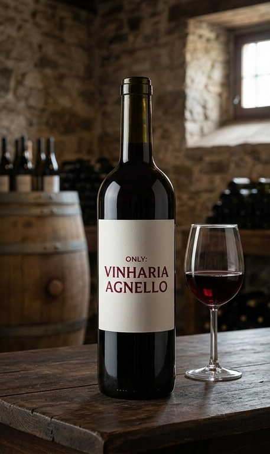
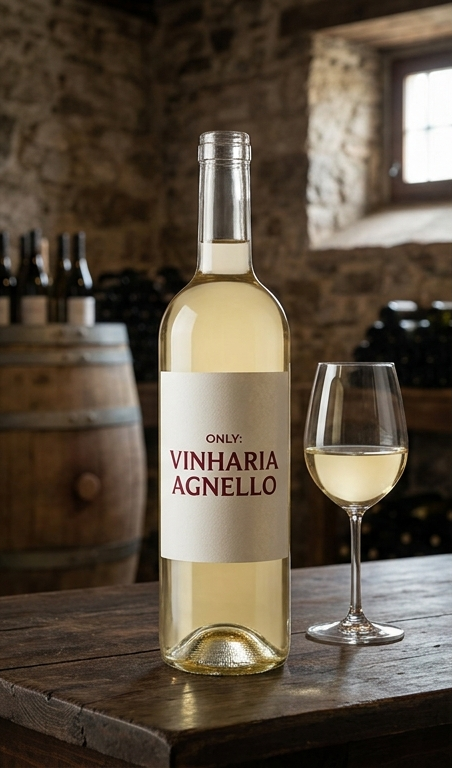
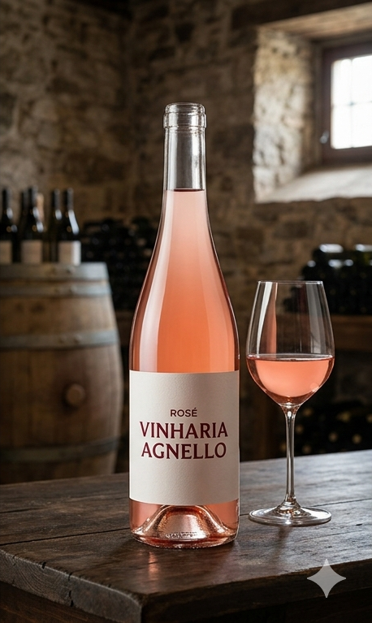

Vinhos Básicos
Ideais para o dia a dia, nossos vinhos básicos são acessíveis e agradáveis, perfeitos para quem está começando a explorar o mundo dos vinhos.

Vinhos Intermediários
Para quem busca mais complexidade, os vinhos intermediários oferecem aromas mais elaborados e maior equilíbrio. São ótimas escolhas para jantares especiais.

Vinhos Premium
Nossa seleção premium reúne rótulos exclusivos, safras especiais e vinhos de alta qualidade.

Experiência na Escolha
Na Vinheria Agnello, oferecemos orientação personalizada para ajudar você a escolher o vinho ideal conforme seu gosto, ocasião e orçamento.